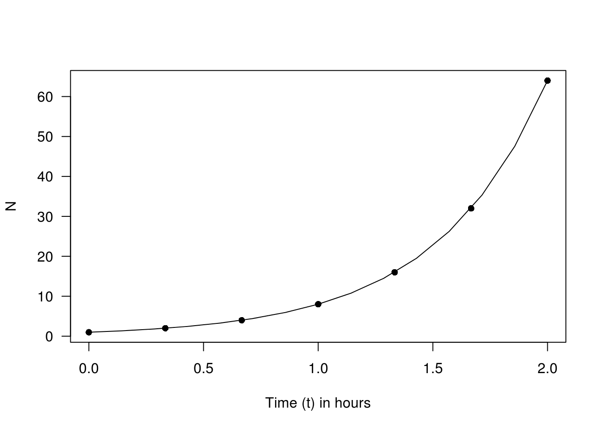
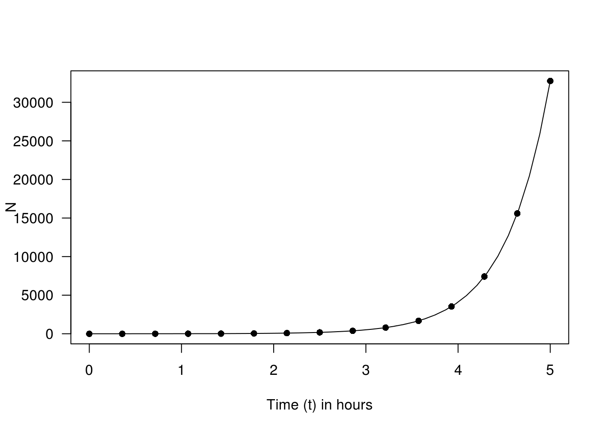

Chapter 5 Working with Exponentials
5.1 Standard Form
Key Skills:
- i1 Be able to interpret large or small numbers in standard form, including the use of a spreadsheet or calculator.
- i2 Be able to calculate with numbers in standard form.
5.1.1 All Numbers Great and Small
Standard form is a notation that has been developed to cope with the fact that we need to deal with both very large and very small numbers.
Take the scientist as an example, she may be involved in measuring the length of a micro organism or bacterium. Usually scientists will use a unit that is appropriate to the context, a typical bacterium might be 180 microns long. But we need to be able to relate these units to familiar measurement systems such as meters.
In fact 1 micron is equal to 1 micrometer (\(1 \mu m = 0.000001 m\)). Other tiny units suitable for the atomic scale are nanometers (\(1 nm = 0.000000001m\)). All of these zeroes lead to increased potential for mistakes so we have adopted a notation called standard form to track the place value of the numbers we deal with.
Take \(1 \mu m\) for example, in standard form this is \(1\times 10^{-6}m\) and on your calculator this might be displayed as \(1\text{EXP}-06\) or in a spreadsheet as \(1\text{E}-06\). What it means is to calculate: \[1\times 10^{-6}=\frac{1}{10^6}=\frac{1}{1000000}=0.000001\]
This gives us a very powerful and compact notation for very small numbers and also avoids errors by being clear about which decimal place the number is in.
\(a\times 10^{n}\) is a number in standard form if \(1\leq a \lt 10\). So whilst \(25\times 10^{3}\) makes sense as the number \(25000\) it is not in standard form because \(25 \geq 10\), one should write \(2.5\times 10^{4}\) instead. Notice how a factor of \(10\) has been removed from the \(25\) and increased \(10^{3}\) by one power to \(10^{4}\).
e.g. \(5.7 \mu m = 5.7\times 10^{-6}=0.0000057\) Notice in this example that the \(5\) lands in the 6th decimal place and the \(7\) that was after the decimal point in \(\mu m\) still comes just after the \(5\).
Incredibly large numbers can also be handled by using positive powers of ten. For example a scientist measuring the distance to the Andromeda Galaxy might do so in Astronomical Units (AU). One AU is the average distance between the Earth and the Sun (\(1.496\times 10^{11}m\)). On this measurement the Andromeda Galaxy is \(1.625\times 10^{11}\) AU away from us. This figure is incredibly large equal to \(16250000000 AU\), in other words \(16250000000\) times farther away from us than the sun is.
5.1.2 Comparing Numbers in Standard Form
It is really easy to compare two numbers in standard form provided you remember to compare the power first!
e.g. \(1.2\times 10^{17} \gt 8.45\times 10^{15}\) Looking at the powers first we can see that the first number is much greater! It is actually easier to compare numbers in this form than in their non-standard form represntation \(120000000000000000\gt 8450000000000000\) is less obvious!
5.1.3 Manipulating Numbers in Standard Form
To multiply two numbers in standard form simply multiply the two number parts and add the powers of ten together: \[(a\times 10^{n})\times(b\times 10^{m})=(a\times b)\times 10^{n+m}\] The only possible correction is that the product \(a\times b\) might be bigger than \(10\) and so you may need to adjust the powers afterwards.
e.g. \((3\times 10^{6})\times(5\times 10^{4})\) We multiply \(3\) and \(5\) and add the powers \(6\) and \(4\). \((3\times 5)\times10^{6+4}=15\times 10^{10}=1.5\times 10^{11}\) In the final step because \(15\geq10\) we “move” a ppwer of ten out of the \(15\) and into the power.
To divide two numbers in standard form simply divide the two number parts and subtract the powers of ten: \[(a\times 10^{n})\div(b\times 10^{m})=(a\div b)\times 10^{n-m}\] Again you may need a correction in that the quotient \(a\div b\) might be less than \(1\) and so you may need to adjust the powers afterwards.
e.g. \((1.2\times 10^{5})\div (4\times 10^{8})\) We divide \(1.2\) by \(4\) and subtract the powers \(5\) minus \(8\). \((1.2\div 4)\times 10^{5-8}= 0.3\times 10^{-3}=3\times 10^{-4}\) In the final step because \(0.3\lt 1\) we need to “borrow” a power of ten from \(10^{-3}\) to multiply up to \(3\). This borrowing reduces the power from \(10^{-3}\) to \(10^{-4}\).
Adding or Subtracting numbers in standard form is trickier and is not really what standard form was designed for. But if you need to do it the key is to change both numbers to a common power of ten before either adding or subtracting.
e.g. \(3\times 10^{7} + 4\times 10^{5}\) The smallest power is \(5\) so convert the first number into \(10^{5}\). \(3\times 10^{7}=300\times 10^{5}\) (we do this by “paying out” two powers of ten from \(10^{7}\)) Now we are able to directly add the \(300\) and \(4\) giving us \(304\times 10^{5}\). We must now convert back to standard form, \(3.04\times 10^{7}\). So in summary: \(3\times 10^{7} + 4\times 10^{5}=300\times 10^{5}+ 4\times 10^{5}=304\times 10^{5}=3.04\times 10^{7}\)
5.2 Exponentials
Key Skills:
- i3 Be able to explore exponential growth and decay, including interpreting output from a spreadsheet.
- i4 Be able to represent and interpret exponential growth or decay in a graph.
- i5 Be able to solve equations of the forms x^5 = 35 and 1.05^x = 8.2.
5.2.1 Models for Exponential Growth and Decay
There are many situations in nature and life for which an exponential model is appropriate. We use an exponential model if for a fixed time period the value increases or decreases by the same percentage.
e.g. Biological growth
When a modelling cell division scientists sometimes use the following model \[N=N_0 2^{ft}\] where \(N\) is the number of cells present at time \(t\) hours. \(f\) is the number of times per hour, on average, that the cells divide (different for different species) and \(N_0\) is the initial population of cells.
What are the consequences of this model?
In ideal conditions E. Coli cells will divide every 20 minutes. This would mean 3 times per hour, i.e. \(f=3\). If we start with just one E.Coli cell then \(N_0=1\).
After 1 hour, when \(t=1\) the model predicts \(N = 1\times 2^{3\times 1}= 2^3 =8\). Why is this? After 20 minutes the initial single cell divides into two daughter cells, twenty minutes later each daughter cell divides again into two daughter cells giving \(2\times 2=4\) cells. Again after a further twenty minutes each cell has split into two and we have \(4\times 2 = 8\) cells.
The advantage of the model is that we can calculate the number of cells at any given time directly without having to multiply by two again and again.

The growth over the first two hours may be impressive but over the first five hours the population of bacteria will rise to an astounding \(32798\)!

Notice how the impressive growth of the first two hours now looks almost constant compared to the exponential growth of the first five hours. This is a characteristic of all exponential growth, at any stage the increase coming next in absolute terms will be bigger than any of the previous increases.
Incidentally you can see from the graph why food may only be held at a warm temperature for a maximum of 2 hours and still be deemed safe to eat1.
5.3 Logarithmic scales
Key Skills:
- i6 Be able to use and interpret a logarithmic scale on a graph.